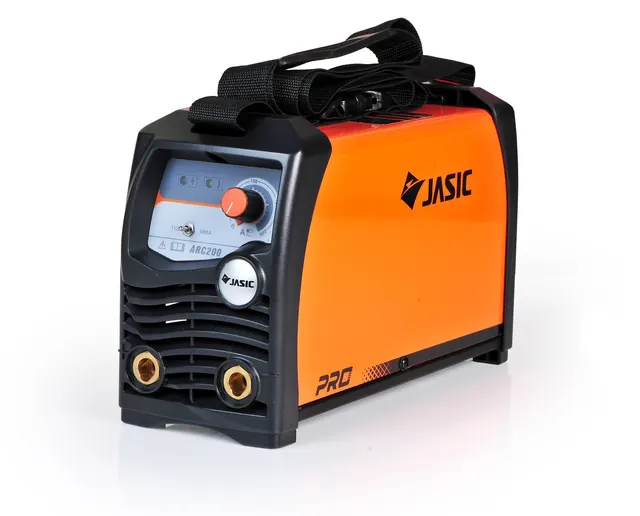
ARC 200 PRO
Equipo MMA confiable para obra y taller. Excelente arranque de arco y uso sencillo.
Soldadoras inverter y equipos de corte para herrería, industria y mantenimiento. Elegí un proceso para filtrar.

Equipo MMA confiable para obra y taller. Excelente arranque de arco y uso sencillo.
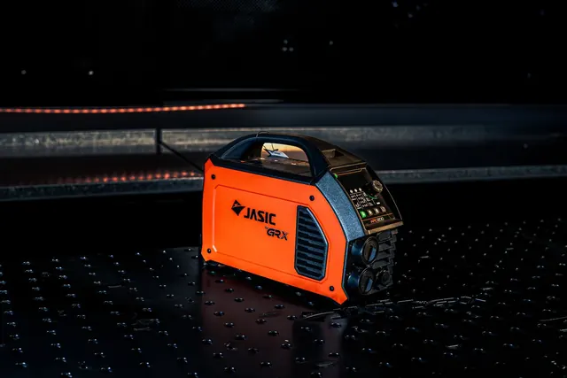
Soldadora MMA 200 A compacta y portátil para herrería y mantenimiento. Arco estable y bajo consumo.
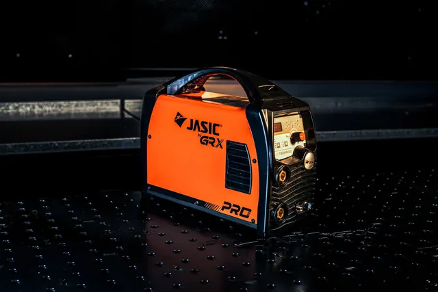
Equipo TIG profesional con pulsado y panel digital de alta precisión.
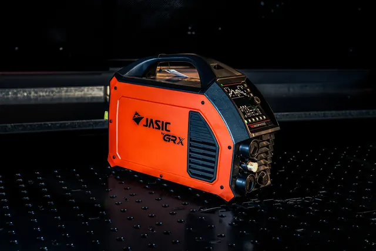
TIG AC/DC con pulsado para aluminio e inoxidable. Control térmico preciso y formato compacto.
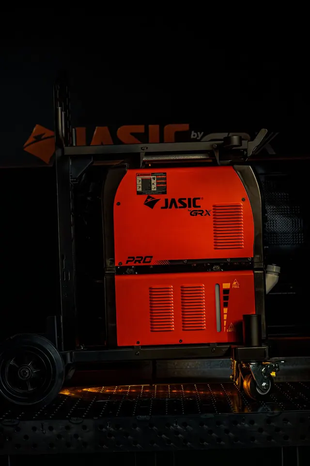
TIG AC/DC 315 A para trabajos exigentes en aluminio y acero inoxidable.
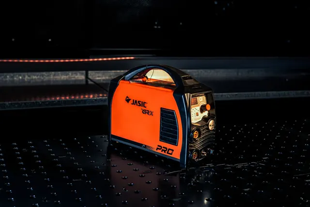
Equipo TIG DC compacto para acero al carbono e inoxidable.
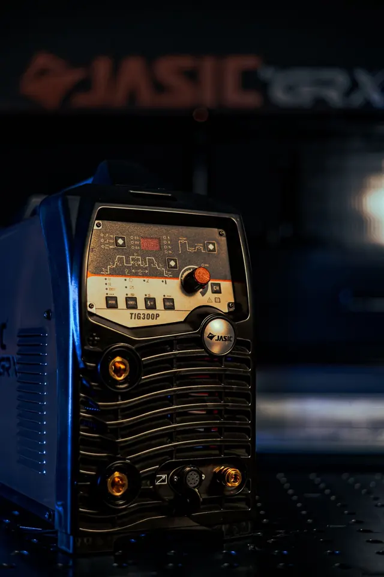
TIG DC pulsado para piezas gruesas y uso industrial continuo.
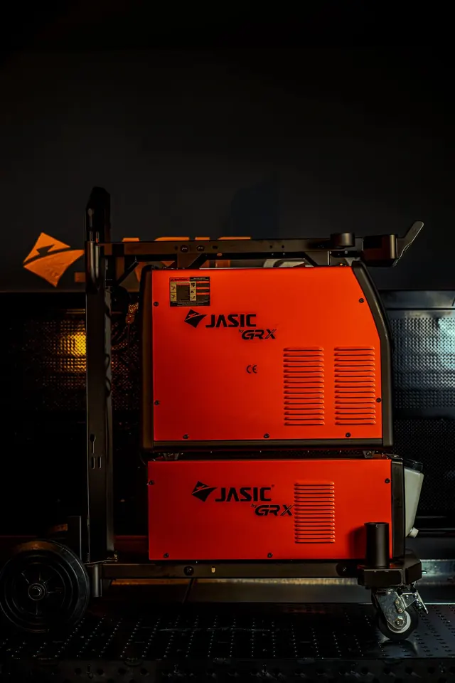
TIG DC 400 A con refrigeración por agua para producción pesada.
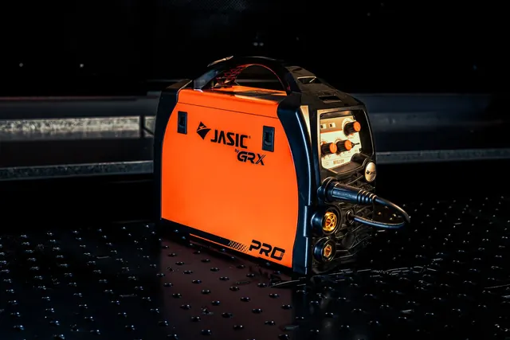
MIG/MAG 200 A compacto para herrería y taller.
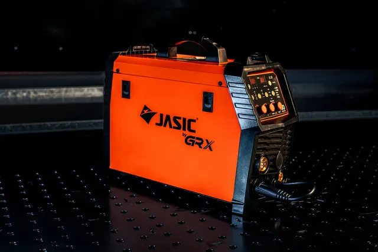
MIG/MAG sinérgico 200 A para uso liviano en taller.
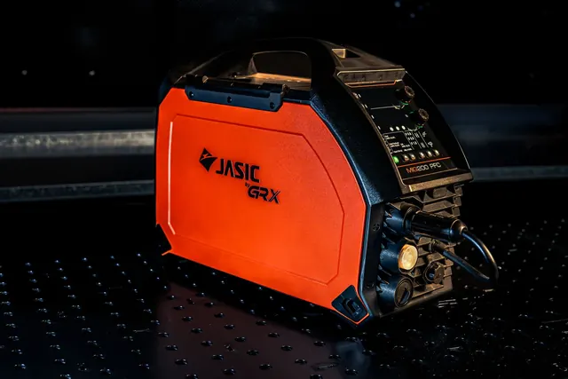
MIG/MAG 200 A sinérgico – ideal para herrería y taller.
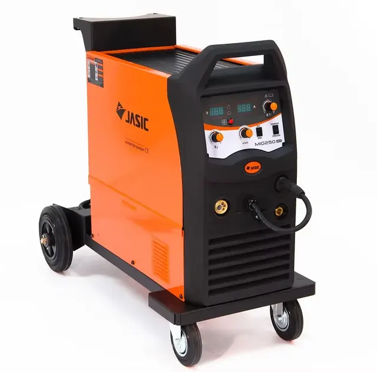
Equipo robusto para trabajos medianos con carro integrado.
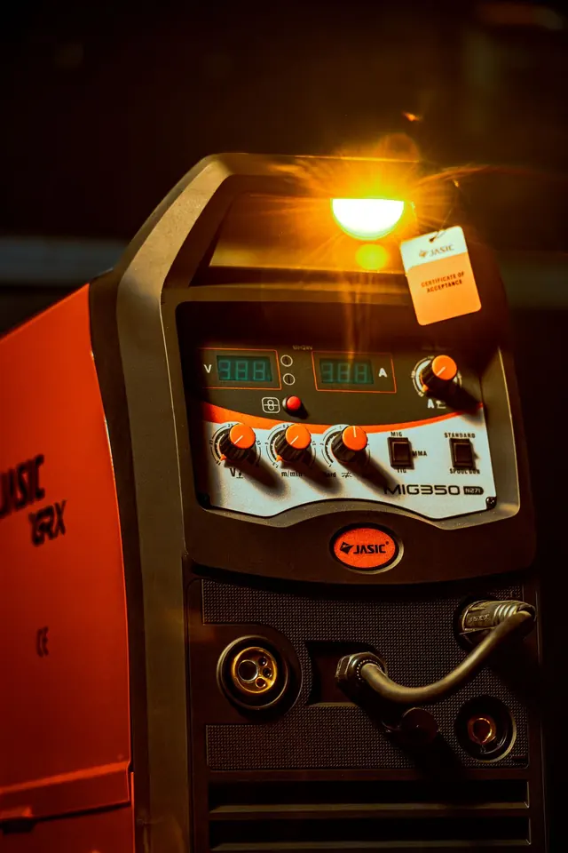
MIG/MAG orientado a herrería e industria liviana.
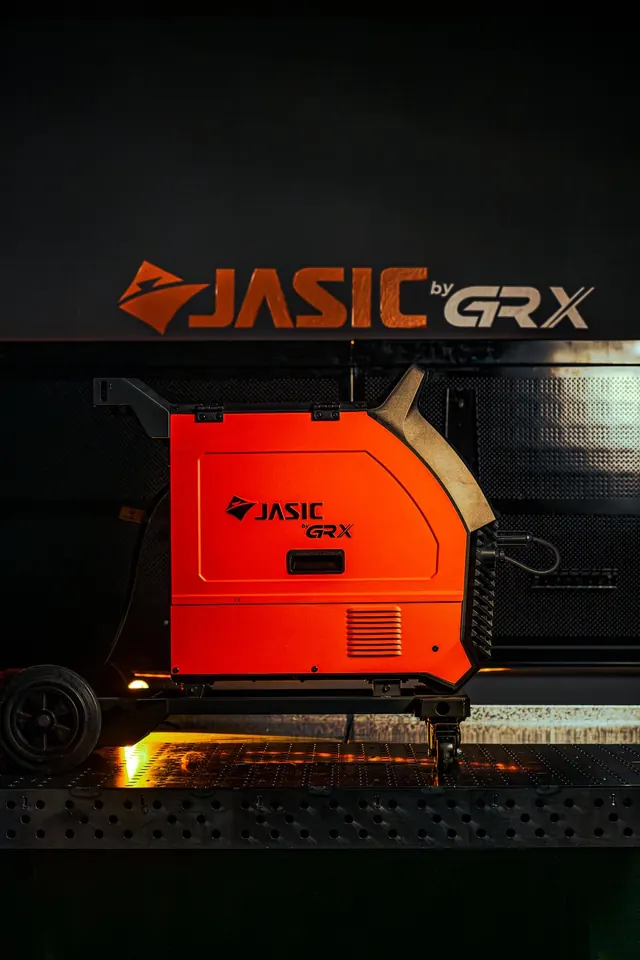
MIG/MAG 350 C para herrería pesada e industria.
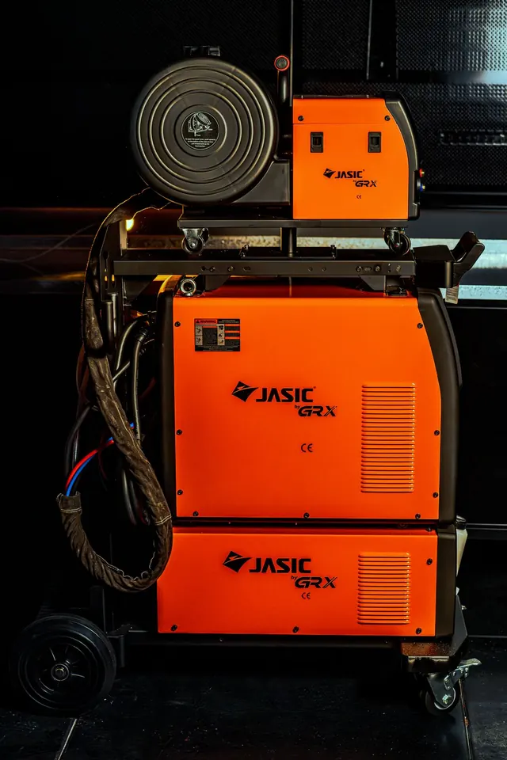
MIG/MAG sinérgico 500 A para uso industrial pesado.

MIG/MAG pulsado para uso industrial pesado.
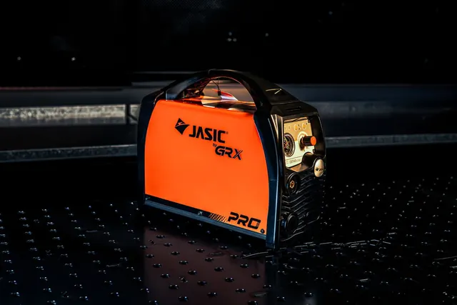
Corte plasma compacto para herrería y mantenimiento.
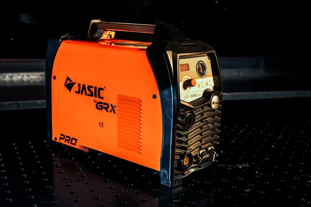
Corte plasma para chapas medianas
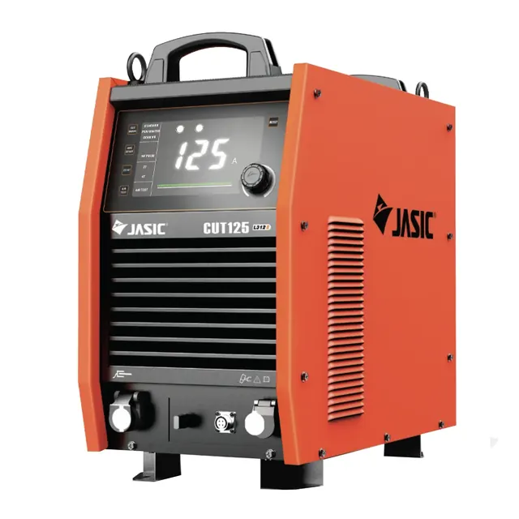
Corte plasma para chapas gruesas.

Soldadura láser de alta velocidad para espesores finos.
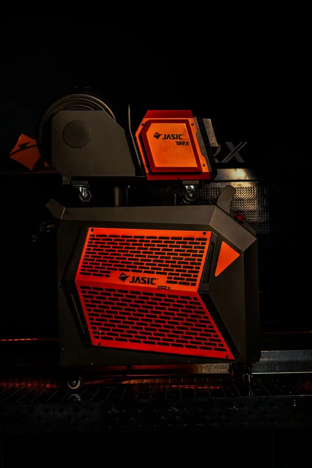
Soldadura láser de alta velocidad para espesores medianos.
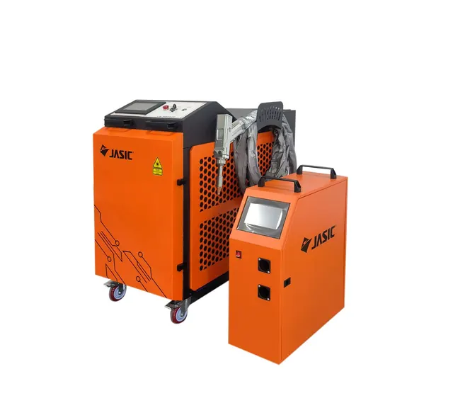
Soldadura láser 3000 W para piezas de mayor espesor.